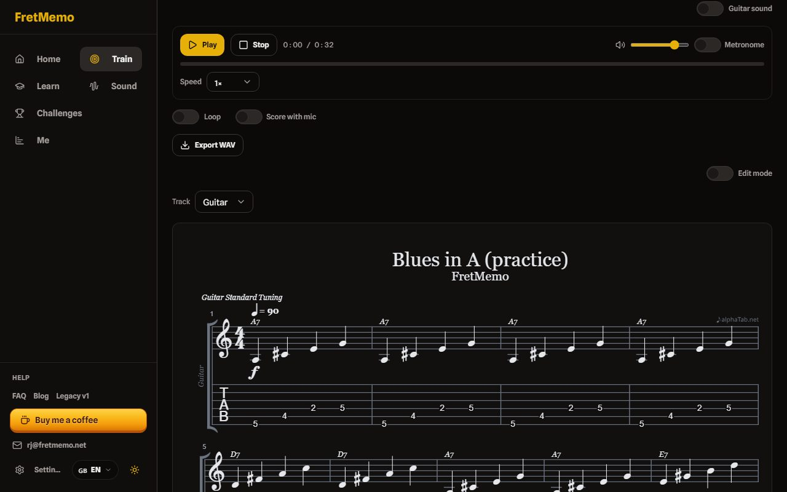

FretMemo works as a free Guitar Pro viewer online. Import a .gp3, .gp4, .gp5, .gpx or .gp file on the Train page and it opens as standard notation and tab that plays in the browser. You don't need an account, and the file stays in your browser's storage on your own device.
A score viewer is an odd thing to find in a free guitar fretboard trainer, I know. It got there because songs are what most guitarists actually want to practice, and once a song is open you can loop it, score it, edit it and hear it through an amp.

Why open a Guitar Pro file in the browser
A Guitar Pro file holds a whole arrangement: every track in notation and tab, with the rhythm and the tempo written in. A plain text tab gives you fret numbers and leaves the rhythm to your memory of the recording, and when you're learning a song the rhythm is usually the part you get wrong.
The annoying part has always been opening the file. You need a desktop program, and it's never installed on the computer you happen to be sitting at. I wanted to drop the file into a browser tab and hear it.
What the viewer shows
After import the song opens with standard notation and tablature, one track at a time. It starts on the first track that isn't drums, and the "Track" selector switches to the others. The parsing is done by alphaTab, an open-source library (MPL-2.0), which the app loads only when you actually open a song.
FretMemo reads the first bytes of the file to work out the format and ignores the extension. A ZIP header means .gpx or a newer .gp file, and the "FICHIER GUITAR PRO" header means GP3, GP4 or GP5. If the bytes are something else, you get a plain message: "This file is not a Guitar Pro file."
Each song in the "Your Songs" list shows its title and details, with buttons to open or delete it. Everything lives in IndexedDB, the database built into your browser, and nothing in the import, storage or playback code sends the file to a server. The flip side is that a song link only works in the browser that imported it. Open it anywhere else and the app tells you the song "may have been deleted or belongs to another device."
Two ways to hear the song
The default engine is a soundfont player. It plays every track with MuseScore General Lite, an MIT-licensed set of instrument sounds that ships with the app. It downloads about 38 MB when you open a song in the viewer. While that runs, the controls show "Loading instrument sounds…" with a percentage, and "Play" appears once it finishes. The service worker then caches it, so soundfont playback works offline after one online session. This mode has the practice controls: play, pause, stop, volume, a "Metronome" switch and "Speed" from 0.5× to 1.5×.
The second engine sits behind the "Guitar sound" switch. With it on, FretMemo renders the song offline ("Rendering guitar audio…") and plays the result through its own guitar sound chain, the engine behind the Sound page. The switch also opens a "Track voices" panel, where each track gets either a voice (a built-in preset or one you saved) or "Direct (soundfont)". A track you haven't assigned plays direct, drums always play direct, and muted tracks are skipped. Your choices are saved per song.
A song can use at most 3 different NAM amps. Assign a fourth and the extra tracks fall back to the classic chain, with a message saying so. What NAM is and how the presets are built is in the post about the free online amp simulator in the Sound tab.
How to open a Guitar Pro file online
- Go to Train on fretmemo.net.
- Expand the "Your Songs" section.
- Click "Import Guitar Pro" and pick a .gp3, .gp4, .gp5, .gpx or .gp file. The song opens in the viewer as soon as it's imported.
- Press "Play". Use "Track" to look at another part.
- For an amp tone, switch on "Guitar sound" and choose a voice per track under "Track voices".
- Next time, open the song from the "Your Songs" list. It stays there in the same browser.
Once a song is open you can loop bars, slow it down and score yourself with a microphone. That part has its own post: how to practice a song on guitar. If the tab has a wrong note, the free online guitar tab editor post covers fixing it.
Exporting the song as WAV
"Export WAV" renders the full mix, every track including drums, and downloads it as a 16-bit PCM stereo file at 44,100 Hz, named after the song. That's useful when you want the arrangement as a play-along track on your phone.
The catch is that the button is disabled while "Guitar sound" is on. So the WAV always uses the soundfont sound and never your amp or NAM tone. If you were hoping to bounce a NAM tone to a file, this won't do it.
Limits
- WAV export is soundfont only, as described above.
- Songs live in one browser on one device. Links can't be shared, and clearing the site's data in your browser removes the songs, so keep your original files.
- The first song you open needs a connection for the 38 MB download.
- "Guitar sound" hides the speed control and the metronome, and one render is capped at about 50 minutes of audio.
- Guitar sound uses sample and amp files that are only partly cached, so I wouldn't count on it offline.
FAQ
Can I open a .gp5 file online without installing Guitar Pro?
Yes. In FretMemo, go to Train, expand Your Songs and click Import Guitar Pro. It reads .gp3, .gp4, .gp5, .gpx and .gp files in the browser and shows notation and tab with playback, free and without an account.
Is my Guitar Pro file uploaded to a server?
No. FretMemo stores imported songs in your browser's IndexedDB on your device, and its import, viewer and playback code does not send the file anywhere. That is also why a song link only works in the browser that imported the file.
Can I convert a Guitar Pro file to WAV for free?
Yes. Open the song in FretMemo and press Export WAV. You get a 16-bit stereo WAV at 44,100 Hz with all tracks, drums included. The export always uses the soundfont sound, because the button is disabled while Guitar sound is on.
Does the Guitar Pro viewer work offline?
Soundfont playback does, after one online session. The 38 MB instrument soundfont downloads when you open a song in the viewer, and the app's service worker caches it. Guitar sound mode relies on sample and amp files that are only partly cached, so it may not work offline.
Open a Guitar Pro file now
Import a .gp5, .gpx or .gp file into Your Songs and hear it in the browser.
Open Your Songs Free, no account, runs in the browser.